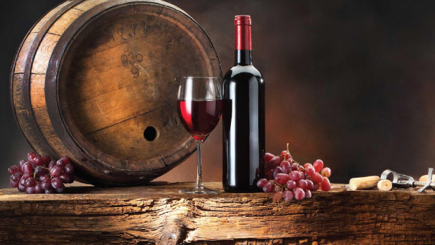
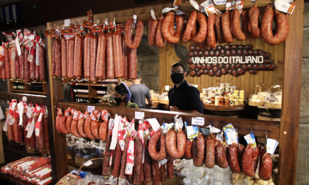
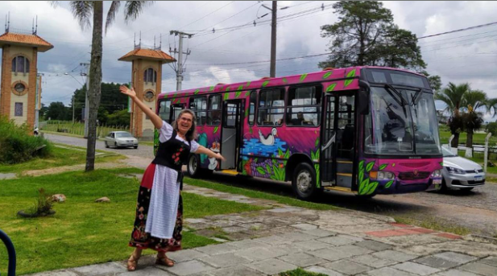
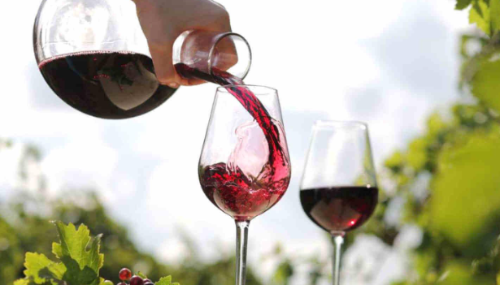

Detalhes do Roteiro
Início Sobre Nós Serviços Pacotes Atividades Contato Caminho do vinho Venha Conhecer Sobre o pacote
O Caminho do Vinho em São José dos Pinhais (PR) é uma excelente opção de passeio cultural, oferecendo uma imersão na cultura italiana e polonesa, com foco em gastronomia, vinhos e lazer em um ambiente tranquilo e acessível.
Situada em São José dos Pinhais a 40 Km de Curitiba está localizada a Vinícola Araucária, onde você poderá degustar vinhos finos, conhecer como funciona a produção e ainda desfrutar da bela paisagem da região. A visita é guiada por um enólogo onde primeiramente é feito um tour pelos vinhedos, seguindo coma uma breve apresentação técnica dos vinhos, seus processos de elaboração degustações, após a degustação um amplo e aprazível restaurante o aguardo para um saboroso almoço com um toque especial do chefe. Ao final você está convidado a caminhar na mata por uma trilha ecológica a beira rio, passando por cachoeiras, bosques, lagos e muito ar puro!
Tarifas
| Nº de pessoas | Guia bilíngue | Adulto | Criança |
|---|---|---|---|
| 2 a 13 | Não | R$ 562,00 | R$ 223,00 |
| 2 a 10 | Sim | R$ 595,00 | R$ 299,00 |
Galeria de Fotos



